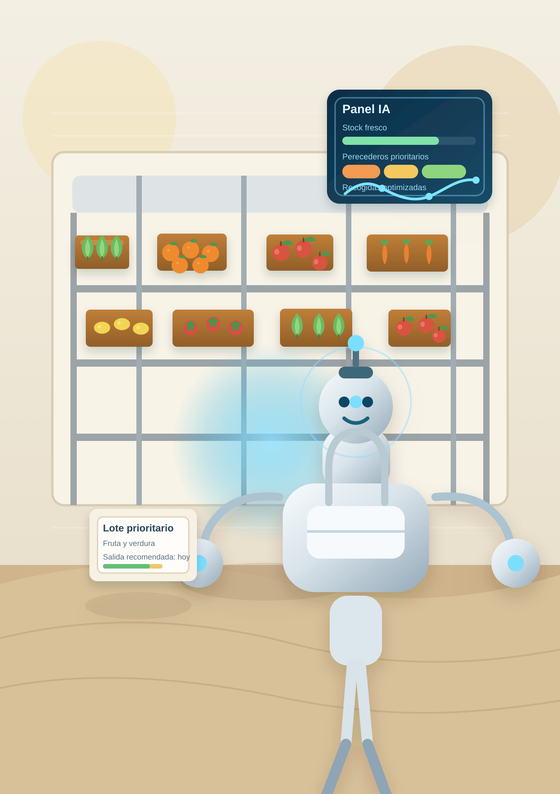

Prototipo funcional de plataforma
Anticipar la demanda, aprovechar excedentes y coordinar recogidas con IA.
AImentacion centraliza inventario, predicción, alertas de perecederos y colaboración con empresas donantes para que las entidades sociales tomen mejores decisiones con menos desperdicio.
- Predicción semanal por zona
- Recogidas optimizadas
- Alertas de caducidad
- Portal para supermercados, hoteles y restaurantes
Vista global
PoC activa

Agente de perecederos
Recomienda salida inmediata de fruta y verdura con fecha cercana en 2 entidades piloto.
Por qué importa
El cuello de botella no es solo conseguir alimentos, sino decidir bien y a tiempo.
de toneladas desperdiciadas en 2022
El problema alimentario también es logístico: exceso en un punto, escasez en otro y poco margen para reaccionar con perecederos.
distribuidas por la red FESBAL en 2024
La escala ya existe. Lo que falta es una capa de inteligencia operativa para priorizar stock, rutas y necesidades semanales.
personas atendidas en 2024
Pequeñas mejoras de previsión y coordinación pueden traducirse en más cobertura y menos desperdicio.
Donantes
Inventario
Predicción
Prioridad
Reparto
Impacto
Demo operativa
La misma plataforma cambia según el perfil de la entidad piloto.
Usa el selector para simular cómo varían las predicciones, las alertas y las recomendaciones logísticas entre un entorno urbano, mixto y rural.
Centro urbano
Alta rotación
Predicción por categoría
Modelo tabular + reglas
Centro de alertas
Tiempo sensible
Recomendación logística
Optimización diaria
Portal para empresas colaboradoras
Alta rápida
Asistente de higiene alimentaria
Apoyo informativo
Este asistente orienta, pero no sustituye criterios sanitarios oficiales.
Arquitectura modular
Cinco agentes para repartir mejor la carga operativa.
Inventario
Sincroniza stock, entradas y salidas para evitar decisiones sobre datos obsoletos.
Perecederos
Detecta lotes sensibles y eleva prioridad cuando la ventana útil se estrecha.
Logística
Ordena recogidas y reparto según necesidad, disponibilidad y proximidad.
Aprovechamiento
Propone recetas y destinos alternativos para alargar el valor social del excedente.
Asistente web
Responde dudas operativas y de conservación para personal, donantes y usuarios.
Escalado realista
Un piloto económico, pero suficientemente amplio para medir impacto.
La PoC se imagina con 2 o 3 entidades para validar generalización, utilidad logística y reducción de mermas antes de escalar.
Análisis, requisitos y diseño del piloto.
Limpieza de datos, taxonomía y cuadro base de inventario.
Modelo predictivo y reglas de priorización.
Portal web, agentes principales y pruebas internas.
Despliegue piloto, medición de resultados y ajuste del sistema.
Indicadores que este prototipo quiere hacer visibles
- mejora de cobertura frente a demanda estimada
- reducción de producto perecedero desechado
- menos tiempo invertido en coordinación manual
- mejor captación y trazabilidad de donaciones empresariales